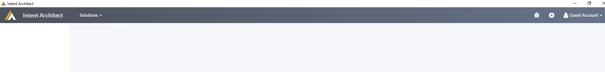

User Manual
The Shell

Legend
| No | Description |
|---|---|
| 1 | Home Screen Area |
| 2 | Solution drop down |
| 3 | Debug button |
| 4 | Play button |
| 5 | User context |
| 6 | Context specific menu |
| 7 | Content Region |
Home Screen Area
Clicking here will take you back to the Home Screen.
Solution drop down
This list contains a complete list of all you Intent Architect solutions. This drop down can be used to switch between solutions.